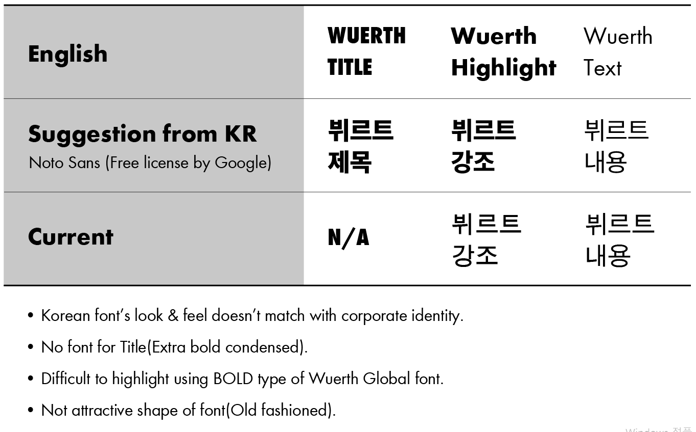
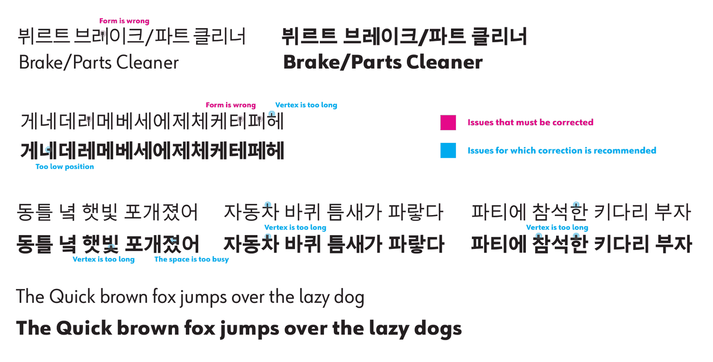
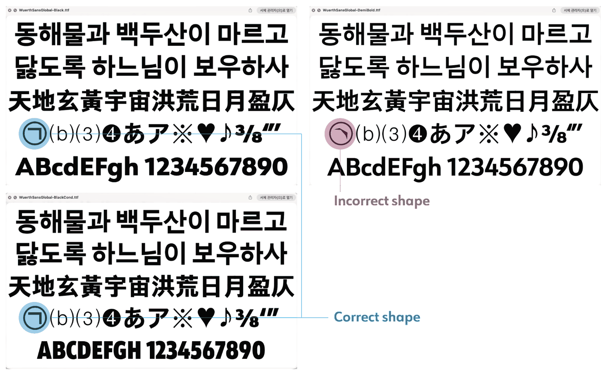

글로벌 브랜드의 한글은 누가 지키나
외국계 글로벌 그룹 본사의 담당자들은 한글을 읽지 못한다. 그래서 글로벌 브랜드의 한글 품질은 결국 현지 담당자가 지켜야 한다. 입사해 보니 그룹 서체에는 제대로 된 한글이 없었다. 한 장짜리 표로 문제를 진단해 본사에 전하고, 새 서체가 나올 때까지 국내 법인의 임시 기준을 맞췄으며, 새 서체의 한글 검수까지 맡았다. 그 1년 반의 기록이다.
시작하게 된 계기
시각디자인을 전공해서인지 서체에는 늘 눈이 먼저 간다. 누군가에게는 사소하게 느껴질 수 있는 글자 모양에도 브랜드의 정체성이 담긴다고 믿어서다. 서체 디자이너로 10년 넘게 일한 지인과는 지금도 글자와 브랜드 정체성에 관한 이야기를 자주 나눈다.
서체를 고르는 기준은 동부대우전자에서 처음 배웠다. TV GUI 서체를 고르며 선배 디자이너와 아이덴티티를 고민하던 때, Noto Sans의 장점을 들었다. 여러 언어를 지원하고, 언어가 바뀌어도 같은 인상을 유지하며, 튀지 않는 기본형이라는 점이다. 브랜드에 맞춰 설계된 한글이 없을 때 정체성을 해치지 않는 가장 안전한 선택이라는 뜻이다.
가이스트리히코리아에도 영문 서체 Kievit에 맞춰 설계된 한글은 없었다. 그래서 같은 기준으로 Noto Sans KR을 썼고, 한글 로고타입과 서체 가이드라인도 이때 처음 만들었다.
밖에서도 같은 장면이 눈에 들어왔다. 글로벌 럭셔리 브랜드가 한국 시장용으로 직접 만든 소셜미디어 광고에는, 화려하고 고급스러운 비주얼 위에 브랜드의 톤과 전혀 어울리지 않는 기본형 한글 서체가 얹혀 있는 경우가 종종 있었다. 한글에 대한 관심과 이해가 낮을 때 생기는 일이고, 그 한 줄 때문에 브랜드 아이덴티티가 흐려진다.
2024년 3월 한국뷔르트에 입사해 보니 같은 일이 안에서 벌어지고 있었다. 그룹 서체 Wuerth Global에서 라틴 타입은 제목·강조·본문 세 역할로 짜여 있었지만, 한글은 시스템 기본 서체인 돋움으로 대체되고 있었다(무려 90년대에 개발된 서체다). 브로슈어, 라벨, 배너, 카탈로그까지 모든 한글 매체가 같은 문제를 안고 있었다.
문제를 쪼개 보기
'한글 서체가 별로다'는 말로는 본사를 움직일 수 없다. 본사는 한글의 미감을 판단할 수 없기 때문이다. 대신 자기들이 만든 체계에서 비어 있는 칸은 바로 알아본다. 그래서 영문 서체의 세 역할(Title, Highlight, Text)을 기준으로, 지금의 한글이 각 역할을 해내는지 표 한 장으로 비교했다. 진단은 네 줄로 정리했다.

- 한글 서체의 인상이 CI와 맞지 않는다.
- 제목용(Extra bold condensed) 한글이 아예 없다.
- 굵기 단계가 부족해 강조가 어렵다.
- 글자 모양이 낡아 보인다.
같은 표에 대안도 넣었다. 한국뷔르트가 이미 한글에만 쓰고 있던 무료 라이선스 서체 Noto Sans로 제목·강조·본문을 채운 예시다. 비용이 들지 않고, 정식 서체가 나오면 그대로 걷어낼 수 있는 안이었다.
표에 적지 않은 비용도 있었다. 영문과 국문 서체가 다르니 홍보물을 만들 때마다 국문만 서체를 바꿔 적용하고 글자 간격을 다시 맞춰야 했다. 1인 마컴에게는 매번 반복되는 작업 손실이었다.
서체가 사소해 보여도 B2B에서는 사소하지 않다. 고객은 전문가이고, 수입 제품은 현지 경쟁사보다 비싸다. 높은 가격을 납득시키는 것은 매체의 완성도이고, 서체는 그 첫인상이다.
본사에 올리고, 국내부터 맞추기
2025년 3월 31일, 이 비교표를 독일 본사 International Marketing & Brand Communication 팀에 보냈다. 답은 '2026년 중반에 새 서체를 배포할 예정'이었다. 해결은 약속받았지만 1년 넘게 기다려야 했다.
기다리는 동안에도 매체는 계속 나간다. 그래서 새 서체가 나올 때까지 한글은 Noto Sans로 임시 통일하자고 국내 뷔르트 법인들에 제안했다. 뷔르트인더스트리는 공감하고 함께 맞췄다. 뷔르트일렉트로닉스는 소속 사업 라인이 달라 원래 그룹 기준 서체를 쓰지 않았기에 보탤 의견이 없었다.
그 결과 그룹 기준 서체를 쓰는 국내 법인은 모두 같은 임시 기준을 쓰게 됐다. 다른 법인에 기준을 강제할 권한은 없었으니, 공감을 얻는 것이 유일한 방법이었다.
검수자로서
2026년 2월, 본사가 새 서체의 테스트 드래프트를 보내며 한글 검수를 요청했다. 내 역할은 개발이 아니라 검수였다. 본사 담당자들은 한글을 읽지 못하니, 무엇이 틀렸는지 판단해 줄 사람이 한국에 필요했다.
1차 검수(2026년 2월)에서는 실제 제품명 '뷔르트 브레이크/파트 클리너'와, 모음·받침 조합이 까다로운 문장을 가는 글자와 굵은 글자로 나란히 놓고 봤다. 지적은 두 등급으로 나눴다. 반드시 고쳐야 할 것(자형 오류)과 고치길 권하는 것(획 끝이 너무 긴 곳, 위치가 낮은 글자, 획이 몰려 답답한 자리)이다.

등급을 나눈 이유는 단순하다. 취향으로 말하면 독일 본사와 개발사는 무엇부터 고쳐야 할지 정할 수 없다. 기준으로 말해야 우선순위가 선다.
2차 검수(2026년 8월)는 서체 파일로 받은 네 가지 굵기(Book, Demi Bold, Black, Black Condensed) 전체를 대상으로 했다. 문장 샘플에 더해 한글 음절표와 기호까지 훑었다. 예를 들어 원문자 '㉠'은 Demi Bold에서만 모양이 틀어져 있었다. 다른 굵기에서는 멀쩡해서, 한 굵기만 봤다면 놓쳤을 오류다.

수정 사항은 내가 추려 개발사에 교정을 지시했다. 개발사 선정이나 비용에는 관여하지 않았다.
지금까지의 결과
1·2차 검수에서 지적한 사항은 모두 정식 버전에 반영됐다. 이후에도 문제를 찾으면 우선 반영하겠다는 답도 받았다. 새 그룹 서체 Wuerth Sans Global이 정식 배포된 뒤에는 한국뷔르트의 모든 매체에 적용했다.
이제 국문과 영문이 같은 서체 가족을 쓴다. 홍보물마다 국문 서체를 따로 바꿔 적용하고 글자 간격을 다시 맞추던 반복 작업도 줄었다. 임시로 쓰던 Noto Sans와 이전 그룹 서체 Wuerth Global은 더 이상 쓰지 않는다.
한계도 있다. 문제 제기부터 배포까지 약 1년 반이 걸렸고, 그동안은 임시 기준으로 버텼다. 그리고 내 몫은 검수와 조율이었지 서체 개발이 아니었다.
앞으로
돌아보면 Noto Sans는 세 회사를 거치며 이어진 기준이었다. 동부대우전자에서 배웠고, 가이스트리히코리아에서 썼고, 한국뷔르트에서는 임시 기준이 됐다. 다만 기본형은 정답이 아니다. 제대로 설계된 한글이 올 때까지 정체성을 해치지 않고 자리를 지키는 값이다. 가이스트리히코리아에서는 그 안전한 선택까지가 할 수 있는 일이었다면, 이번에는 본사 서체에 한글을 넣게 해서 문제를 원천에서 풀었다.
글로벌 그룹의 브랜드 시스템은 본사가 만든다. 하지만 그 시스템이 한국어로 제대로 작동하는지는 본사가 확인할 수 없다. 현지 마컴의 일은 본사 자료를 받아 옮기는 데서 끝나지 않고, 그 품질을 현지 언어로 지키는 데까지 간다.
이번 일로 굳힌 방식은 세 가지다.
- 취향의 문제는 시스템의 빈칸으로 바꿔 보여준다. 본사는 한글의 미감은 판단하지 못해도, 자기들 체계에서 비어 있는 칸은 바로 알아본다.
- 내 권한으로 할 수 있는 임시안과 본사만 할 수 있는 근본 해결을 나눈다. 근본 해결을 기다리는 동안에도 매체는 나가므로, 임시안은 비용이 들지 않고 나중에 걷어내기 쉬워야 한다.
- 상대가 잘 모르는 영역의 결정을 구할 때는, 판단을 넘기지 말고 판단을 끝낸 우선순위를 건넨다.
서체가 아닌 다른 본사 자산에도 같은 방식이 통할 것이라고 본다.
그리고 무엇보다, 이제 한 서체로 국문과 영문을 함께 만들 수 있어서 너무 편해졌다!